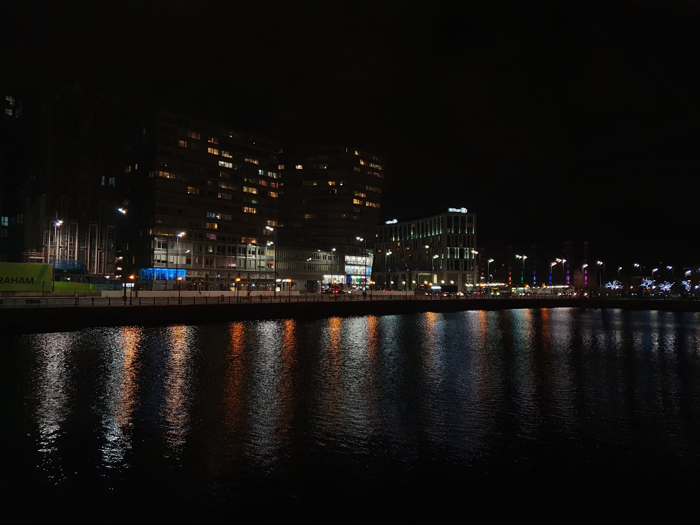
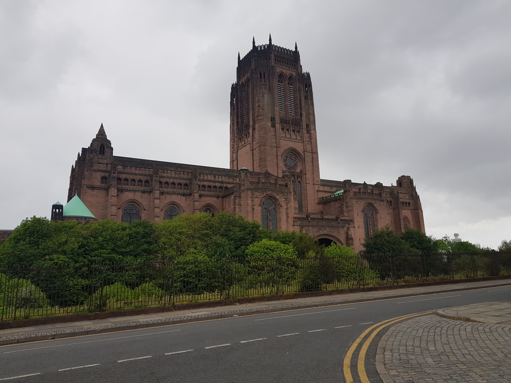

Liverpool, a vibrant city in the North West of England, is located approximately 200 miles by road from the capitals of England, Scotland, and Wales. With a population of just under 500,000 in the city itself, and around 2.25 million people in the wider metropolitan area, Liverpool ranks as the fifth largest metropolitan area in the UK. The city's rich history dates back over 800 years to 1207, when it was founded by King John as a borough. Over the centuries, Liverpool has evolved into a bustling port city, a centre of trade, and a cultural hub. In 1880, it was granted city status, solidifying its place as one of the most historically significant cities in the country. Today, Liverpool is renowned not only for its remarkable past but also for its modern-day significance in arts, culture, and innovation, continuing to play a pivotal role in the UK's development.

In 2008, Liverpool was named the European Capital of Culture, a title that recognized the city's rich history and contribution to arts and culture. Prior to this, several of Liverpool's iconic landmarks were granted World Heritage status, a testament to the city's architectural and historical significance. Among these notable sites are the Royal Liver Building, an iconic symbol of the city, constructed between 1908 and 1911. This architectural masterpiece is renowned for its two large liver bird sculptures perched on top, which have become synonymous with Liverpool's identity. The Albert Dock, built in the 1840s, is another prime example of Liverpool's maritime history, showcasing elegant warehouses and a vibrant cultural hub that draws visitors from all over the world. St George's Hall, which boasts being the first air-conditioned building in the UK, is an architectural gem that has served as a concert hall, law courts, and public venue for over 150 years. Liverpool is also home to two spectacular cathedrals, each a distinct feature of the city's skyline. The Anglican Cathedral, which took almost 75 years to complete, holds the title of the largest cathedral in Britain, and its towering spire is one of the tallest in the world. This awe-inspiring structure is a masterpiece of Gothic Revival architecture. On the other hand, the Metropolitan Cathedral, built in the 1960s, stands as a strikingly modern and unique landmark. Often referred to as the "Liverpool Metropolitan Cathedral" or "Paddy's Wigwam," its futuristic design and circular form make it one of the most unusual and memorable churches in the country. Beyond these world-famous buildings, Liverpool is home to a variety of other notable structures that showcase its architectural diversity. The Liverpool Central Library, with its grand neoclassical facade and stunning interior, is a hub for learning and culture in the heart of the city. The Cunard Building, built in 1917, is one of the 'Three Graces' alongside the Royal Liver Building and the Port of Liverpool Building, and its classical design reflects Liverpool's prominence during the early 20th century as a major port city. The Echo Arena, a modern venue built along the waterfront, is another example of the city's blend of historic and contemporary architecture, serving as a leading location for concerts and events. One cannot overlook the historic Lime Street Station, a bustling railway station with a beautiful Victorian design, which has recently undergone major renovations to restore its original grandeur while integrating modern facilities. And, of course, the recently revamped and redeveloped Baltic Triangle area, home to many trendy offices, bars, and shops, combines Liverpool's industrial past with a vibrant and creative present. Together, these buildings tell the story of Liverpool's evolution, from its maritime roots to its cultural renaissance, offering a fascinating glimpse into the city's past, present, and future.

Football is undeniably the most popular and beloved sport in Liverpool, and the city is home to two of the most well-known and successful football clubs in the world. Liverpool Football Club (LFC), founded in 1892, has a rich and storied history, with a long-standing tradition of success both in domestic and international football. The club is based at Anfield, an iconic stadium located in the Anfield area of Liverpool. Anfield is one of the most famous football grounds in the world, known for its passionate supporters, particularly the famous "Kop" stand, which creates an electric atmosphere on matchdays. LFC has won numerous domestic league titles and European cups, cementing its place as one of the most successful clubs in English football history. Across the city, Everton Football Club (EFC), founded in 1878, holds its own remarkable legacy. Known as "The Toffees," Everton has a proud history and is one of the founding members of the Football League. The club plays its home matches at Goodison Park, located in Walton, a stadium which has hosted many legendary moments in football. Goodison Park is one of the oldest football stadiums in England and holds a special place in the hearts of Evertonians. Despite recent struggles, Everton remains a club with deep roots in the city, known for its loyal fan base and rich history of producing top football talent. In addition to these two prestigious Premier League clubs, Liverpool also boasts another football team in the region, Tranmere Rovers. Though less well-known than its more famous counterparts, Tranmere plays a significant role in the local football scene. The club is based at Prenton Park, located in Birkenhead on the Wirral, and has a strong following in the local community. Tranmere Rovers currently competes in League Two, the fourth tier of English football, though it has had moments of success, particularly in the 1990s when they reached the final of the League Cup and had strong showings in the FA Cup. An interesting fact about Tranmere Rovers' Prenton Park stadium is its connection to Everton. When Everton upgraded their stadium lights, the old lights were sold to Tranmere Rovers, who reused them for their own stadium. This is just one example of how football clubs in the region, despite their rivalries, often have shared connections and histories. Exciting developments are also underway in the city’s football scene. A new stadium for Everton is nearing completion at Bramley Moore Dock in Vauxhall, an area near the waterfront. This modern stadium, set to open in the 2025-2026 season, will replace Goodison Park as Everton's home ground. The new stadium is set to be a state-of-the-art facility, with a seating capacity of 52,888, making it the eighth largest stadium in England. This is a significant upgrade from Goodison Park's current capacity of just under 40,000, and it promises to provide Everton fans with a world-class matchday experience. The new stadium is part of a wider regeneration project in the area and is expected to contribute to the growth of Liverpool as a footballing hub in England. Together, the rich football history of Liverpool’s two Premier League clubs, combined with the ongoing developments and the presence of Tranmere Rovers, showcase the city’s deep connection to the beautiful game. Whether it’s the fiercely competitive Merseyside Derby between Liverpool and Everton, or the underdog spirit of Tranmere Rovers, football remains a central part of Liverpool's identity and culture, with a future that promises even more exciting developments.

The Grand National is an annual horse racing event held in April, typically around Easter, at Aintree Racecourse near Liverpool. Known for its challenging and unique nature, it is one of the most famous steeplechases in the world. The event spans three days, with the Grand National race itself being the main highlight. This iconic race covers a distance of 4 miles and includes 30 fences, many of which are notoriously difficult, making it a test of both the horses' and jockeys' endurance and skill. During the event, spectators can place bets on their chosen horses, and millions of pounds are wagered each year. The Grand National is widely broadcast on ITV Racing, bringing the excitement into homes across the UK and beyond. For those wanting to experience it in person, tickets are available to attend the event at Aintree, where the atmosphere is filled with excitement, with spectators enjoying not just the racing, but also the social aspect of the occasion. The Grand National remains a key event in the UK’s sporting calendar, celebrated by fans from all walks of life.

Liverpool, often hailed as the World Capital City of Pop, holds a special place in the history of music. The city’s significant contribution to global pop culture is so notable that it has earned recognition from Guinness World Records for this title. From its rich musical heritage to its vibrant contemporary scene, Liverpool has cemented itself as a powerhouse in the music world. At the heart of Liverpool’s musical legacy is The Beatles, arguably the most famous band to ever emerge from the city. Their groundbreaking influence on the pop music genre has shaped the landscape of music for decades. As pioneers of modern pop, rock, and even experimental music, The Beatles remain one of the best-selling music artists of all time, with their songs continuing to resonate across generations. Beyond the legacy of The Beatles, Liverpool’s music scene flourished in the 1990s and 2000s, when the city became a hub for new sounds, subcultures, and emerging talent. The 051 club, famously known as "The Cream," became an iconic venue for rave and dance music, drawing massive crowds to experience the city’s electronic music culture. Alongside this, Pleasure Rooms was another key spot in Liverpool’s nightlife, offering a space for both local and international DJs to showcase house, trance, and club music to a fervent crowd. These venues and their associated scenes contributed to Liverpool’s reputation as a global party city and made it an important destination for dance music enthusiasts. With such a rich and ever-evolving musical legacy, Liverpool continues to thrive as a city of musical innovation, producing not only world-renowned artists but also nurturing diverse music scenes that keep its spirit alive today.